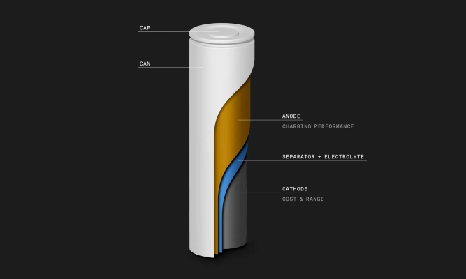
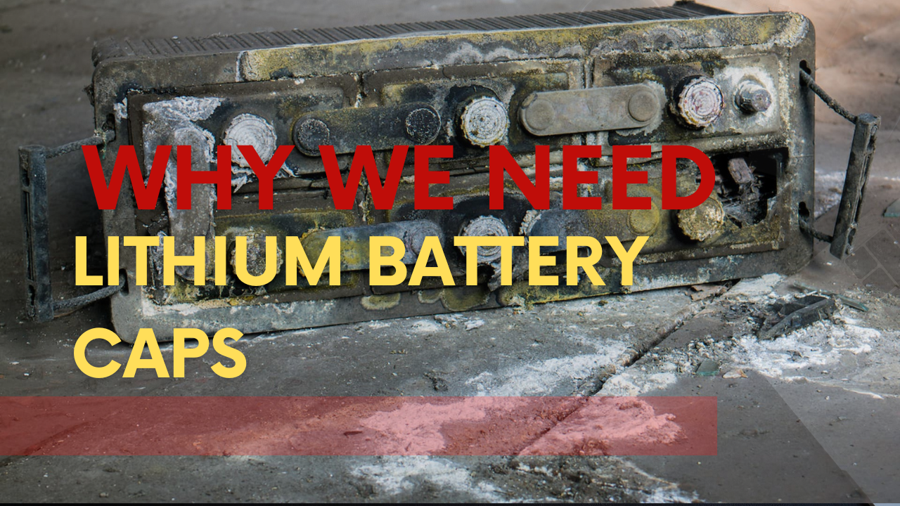
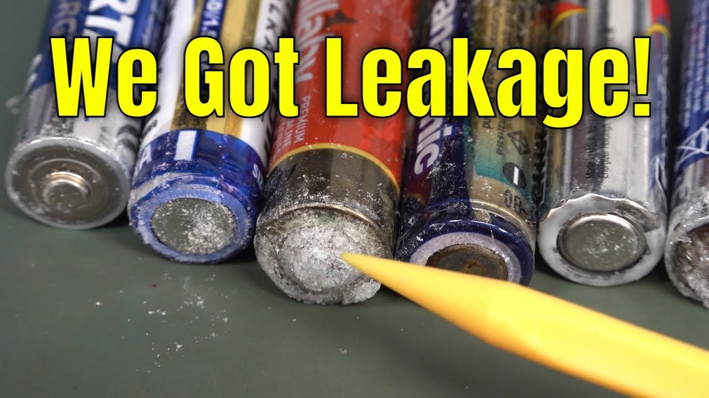
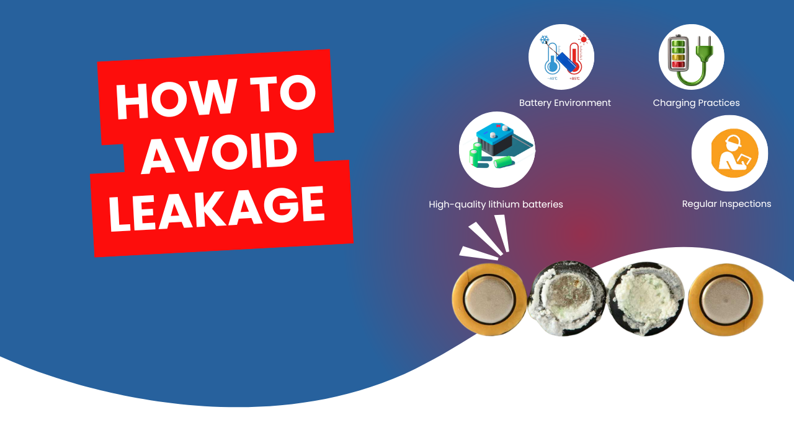

Lithium-ion batteries see more cases of cap leakage during use as they are efficient and lightweight. The leakage not only affects the service life of the battery, but also possesses the risk of loss of life and resources.
What then is the cause of the lithium battery cap leaking?
This article will then examine the structure, composition, and manufacturing of lithium batteries.
Structure of a Lithium-ion Battery
Lithium batteries generally include positive electrodes, negative electrodes, diaphragms, electrolytes, and shells. The positive and negative electrodes consist of lithium-ion positive and negative materials. The diaphragm isolates these electrodes, while the electrolyte transfers ions. Meanwhile, the shell, typically made of metal or plastic, safeguards the battery's internal structure.

Why We Need Lithium Battery Caps
The lithium battery cap is a vital component of the battery, responsible for safeguarding its internal structure and providing a seal. Its functions include:
1. Protection of Internal Components: The primary function of lithium battery caps is to safeguard the internal structure of the battery. They prevent external objects from damaging sensitive components such as electrodes and diaphragms, which are crucial for the battery's operation. This protective barrier helps maintain the integrity of the battery even in challenging environments.
2. Sealing Function: Lithium battery caps provide an effective seal that prevents electrolyte leaks and keeps external air from entering the battery. This sealing capability is vital for maintaining the chemical stability of the battery's internal environment, ensuring that it operates efficiently and safely.
3. Pressure Management: During charging and discharging cycles, lithium batteries generate internal pressure. The caps are designed to withstand this pressure, preventing potential ruptures or leaks that could occur if the pressure exceeds safe levels. This function is crucial for maintaining the stability of the battery under various operating conditions.
4. Heat Dissipation: Some lithium battery caps are equipped with features that facilitate heat dissipation. Efficient heat management is essential because excessive heat can lead to thermal runaway, a dangerous condition that may result in fires or explosions. By allowing heat to escape, these caps help maintain a safe operating temperature for the battery.
5. Enhancing Safety: The integrity of lithium battery caps contributes significantly to overall safety. By preventing leaks and managing internal pressure, they minimize risks associated with battery failures, such as chemical spills or fire hazards. This safety aspect is particularly important in applications where batteries are used in consumer electronics, electric vehicles, and renewable energy systems.

Reasons for leakage in Lithium Battery Caps
1. Material issues: Material problems might be one of the causes of lithium battery cap leaks. Because the material of the lithium battery cap can be influenced by ambient temperature, humidity, and other conditions, resulting in material aging, deformation, or corrosion, which can impair the cap's sealing function and cause liquid leakage.
2. Manufacturing Defects: The second cause of the lithium battery cap leaking might be a process fault. When producing lithium batteries, if the cap production process is not fine enough or if there are errors in the cap installation process, the cap will have insufficient sealing performance, resulting in liquid leakage.
3. Overcharging: Overcharging is one of the most prevalent causes of leakage in lithium batteries. When a battery is charged beyond its maximum voltage capacity, it generates excessive heat and pressure, which can lead to the breakdown of the electrolyte inside. This breakdown produces gases that increase internal pressure, potentially causing the battery casing to rupture and leak.
4. External Force Damage: The fourth cause of lithium battery cap leaking might be external damage. If a lithium battery is damaged by external pressures while in operation, the cap's sealing effectiveness will be insufficient, resulting in liquid leakage.
5. Aging: As lithium batteries age, their internal components degrade over time, increasing the risk of leakage. The materials used in the battery may become brittle or less effective at maintaining seals, making older batteries more susceptible to leaks.

How to Avoid Leakage
1. Select high-quality lithium batteries: When purchasing lithium batteries, choose high-quality batteries made by reputable manufacturers to assure the quality and sealing performance of the battery's internal structure.
2. Consider the usage environment: When using lithium batteries, keep an eye on the ambient temperature, humidity, and other elements to prevent exposing the battery to excessive temperatures, humidity, or other conditions.
3. Monitor Charging Practices: Avoid overcharging by using appropriate chargers and adhering to recommended charging times.
4. Pay attention to external protection: When utilizing lithium batteries, be sure to protect them from external impact or extrusion.
5. Regular Inspections: Periodically check batteries for any signs of damage or wear and replace them as necessary.

Conclusion
In summary, lithium battery caps are indispensable components that protect internal structures, provide sealing functions, manage pressure, facilitate heat dissipation, and enhance overall safety. Their proper functioning is crucial for ensuring that lithium batteries perform reliably and safely across various applications.